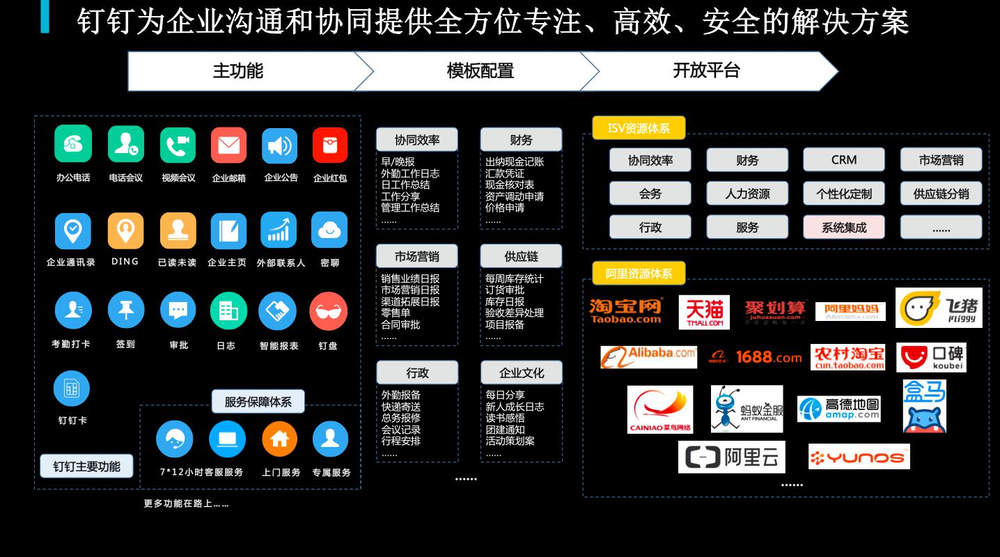

在中国，ToC的红利已经枯竭，ToB的炮火愈演愈烈，钉钉作为ToB最大的平台级玩家，可以从中看到企业服务的现状。
企业服务的发展
软件即服务的SaaS理念
上世纪90年代，随着甲骨文公司数据库生意的快速发展，如何有效管理与客户交往信息，如何跟踪和管理销售项目，而且形成精准的销售预测，这些成为了销售管理层最为头疼的问题。
当时的销售副总裁 Tom Siebel 牵头开发了一套名为 Oasis（绿洲）的软件系统，这算是客户关系管理即 CRM 系统的雏形，当时被叫做“Sales Force Automation 系统”，简称“SFA”。SFA 是让销售标准化最容易的一个过程，如果你的销售过程足够简化和标准化，预测结果自然会更加准确。此后，Tom Siebel 离开甲骨文创立了 Siebel 公司，专门销售 SFA 系统。由于市场的巨大需求，Seibel 公司一举成为当时最成功的管理软件公司之一。
当时，企业级应用软件卖得非常贵，如果一家200人的公司要使用一款低端的商业应用软件，各种定制开发、咨询培训和后期支持费用算下来，第一年至少要花180万美元。不光价格昂贵，购买这些软件的公司还得花几个月甚至几年来安装、定制、维护这些软件系统，结果就只能提高5%的销售额。
看到这些弊端的贝尼奥夫心想，如果能有一种软件产品，不仅能够提高销售员的效益，同时既好用又便宜，可以让客户一年半载就能收回成本，那就好了。恰巧在上世纪90年代，互联网发展出现了一个高潮，贝尼奥夫当时就预见到，随着互联网的发展和宽带的普及，会有越来越多的公司摆脱传统手段，需要通过互联网得到一些软件。
于是在1999年，贝尼奥夫离开了甲骨文公司，创立了自己的公司 Salesforce，后来成为了世界顶尖客户关系管理（CRM）软件服务提供商，并创造性地提出了 SaaS 概念， “软件即服务”，简而言之，就是将传统的 CRM 系统搬到云端来为客户提供服务。
因为创新性地提出了 SaaS 理念，贝尼奥夫被誉为“软件终结者”，他开辟了 CRM 新的里程碑。
打造PaaS平台生态圈
面对越来越多的大客户，Salesforce 迎来了第二个问题：
客户从部门到分公司再到集团总部，各行各业错综复杂，截然不同的流程和机制，不可避免地出现越来越多的定制化客户需求，他们希望 Salesforce 提供除 SaaS 产品以外的、针对自己企业内部部署版本的产品。
然而，贝尼奥夫和其他几位合伙人虽然清楚客户的需求，但是他们坚持自己的最初使命，要做一个颠覆软件产业的产品。俗话说“授人以鱼，不如授人以渔”，他们要做的不是打造客户想要的东西，而是提供一个能让客户自己打造出自己想要的产品的平台。
于是，贝尼奥夫进行了第二次创新，向 SaaS 供应商的基础架构平台发展，打造出自己的 Platform as a Service 平台生态圈，即 PaaS。
简而言之，他们建立了一个平台，允许第三方开发者创建自己需要的模块，比如人力资源管理、项目管理等，满足公司的 IT 部门和独立软件开发商使用不同编程语言研发自己企业需要的应用。同时，这些开发商还可以把自己开发的软件卖出去，从而获得盈利。
Salesforce 海量的用户基础，使得第三方开发者不用担心销售问题，从而潜心研究开发应用，丰富了 Salesforce 上可选的应用模块，实现了更好的定制化服务，建立起一个巨大的健康生态圈，大大增加了 Salesfroce 的竞争力。
布局“大数据+AI”
通过一次次科技的变革，贝尼奥夫逐步稳定了自己的 PaaS 平台生态圈。
我们都知道，精准营销最重要的就是要获取大量数据，在 CRM 时代，贝尼奥夫从人工获取数据进化为通过网络获取数据，进入21世纪后，贝尼奥夫又发现了大数据和人工智能的风口，希望通过再一次创新帮助企业实现更加精准的营销。
这就是贝尼奥夫的第三次创新：大数据+AI。
从2011年开始，Salesforce 收购了10几家大数据和人工智能的初创公司，收购资金超过40亿美元。2016年9月，Salesfroce 推出了世界上首款“CRM+人工智能”产品，叫做“爱因斯坦”，它具备机器学习和自然语言互动能力，能够通过对社会媒体历史数据进行分析，自动挖掘有价值的洞见，并传达给企业，来帮助企业进行下一步策略制定。
“爱因斯坦”这款产品的使命是做一个聪明的 CRM 应用，去挖掘那些人们很难发现、最终石沉大海的信息。
但贝尼奥夫的 AI 野心绝不只是创建一款产品，他更希望能通过“爱因斯坦”将 AI 部署在自己这个平台的各个方面，让 CRM 系统变得智能化、简约化。就像从 SaaS 过渡到 PaaS 一样，贝尼奥夫开放自己人工智能的应用接口，同样让更多的用户把 AI 建立在自己的平台上，形成一个健康的人工智能生态圈。
总结
salesforce现在已经是一家千亿美元的企业服务巨头，它的发展脉络极具前瞻性和标杆性，对于后来者非常有借鉴意义。

钉钉从早期的移动办公IM工具，发展到现在围绕企业管理中的“人、财、事、物”提供多元场景解决方案，其实也正是从SaaS过渡到PaaS的过程，钉钉的定位是移动化、智能化，以统一通讯为基础的协同办公，它下一步要做的或许就是用AI+大数据赋能企业管理，真正实现其智能化的产品目标。
共创钉钉
我们当时的要求就是让团队待在用户企业里去看每一件事，但用户是有戒心的，所以必须要和他们吃在一起喝在一起。
“共创”方法论是钉钉内部的最高原则，要求员工不能在脑中意淫自己想到的idea有多棒，而是要深入共创伙伴的真实办公场景，挖掘痛点，再去场景验证解决方案，最终真正解决现实需求。
“一开始也不是因为战略做的钉钉，而是因为要活下来。所以我们不在别人定义的规则里生活，我关心的是能解决什么问题。”无招在接受钛媒体专访时表示。
这样做有极大的好处，每一个需求都是来自真实场景、用于解决问题的真需求，每一个功能都是真正为了满足用户需求而设计的原创功能。
但是也带来一个问题，不绘制战略地图，依靠随时可能出现的“共创”需求，很难把握好产品规划和迭代节奏，更何况早期的每一个功能都是奠基性的，牵一发而动全身，所以钉钉早期的迭代没有办法像微信一环扣一环那么优雅，反而像是“这些都是好东西，哪里有空哪里插”的填鸭，被用户吐槽功能逻辑不清、太多太乱。
一路摸爬滚打，钉钉在战争中对“我是谁”有了更深的理解，钉钉的“共创”机制也更加有的放矢，更加注重系统性，不再是碎片化地发现需求，而是围绕“人、财、物、事”四个方面定义理想态——拆解未达到理想态的情况——提出解决方案——验证是否解决，提供
连接·融合
在对ISV的态度上，钉钉CEO陈航就有自己的看法，“钉钉与ISV要做融合，不做连接。”他认为唯有融合，才能让双方在资源投入最大化的前提下做好产品，而后者只是对平台流量的贪念。
连接和融合是企业微信和钉钉对于ISV不同的态度。
有一种说法，在于ISV的合作上，企业微信是市场机制，平台在这，流量在这，争得几分，各凭本事，而钉钉是计划经济，先达标准，再谈准入，流量分发，信用背书。
这两种模式存在各自的优势和劣势，但是从平台的定位出发，其实没有优劣之分。
企业微信
劣势：
对企业用户：ISV准入门槛较低，如果企业用户对选择的提供商不满意，已经选择的沉没成本和再去选择的迁移成本较高
对ISV：对于初创的ISV来说，由于企业服务的特性，如果信用资本不够，哪怕有好的服务也很难在平台上争夺一亩三分地，最后强者更强，后者无路
优势：
对ISV：对于头部的ISV，凭借自身优势、利用平台资源可以在竞争中快速跑马圈地，也更愿意留在企业微信
对企业用户：平台能够吸引头部ISV，企业用户可以使用头部ISV的服务
钉钉
劣势：
对ISV：融合的机制对头部ISV没有吸引力，甚至会担心钉钉侵犯自己原本的利益，选择逃离，如致远、红圈营销
对企业用户：头部ISV的逃离使得企业用户无法使用它们的服务
优势：
对ISV：初创的ISV经过钉钉的严格筛选和审核后可以得到平台的信用背书和流量资源，可以更好地存活
对企业用户：能够留在平台上提供服务的ISV有钉钉的信用背书，服务不会差，不会踩坑
钉钉之恶在于彼
在无招看来，通过软件实现流程的在线化、透明化，钉钉将原本存在于互联网公司的架构扁平、自我驱动的组织运作方式传递给中小企业。但无招也坦陈，也只有愿意自我学习、自我研究的企业家，才能将其中的管理思想融合进企业的日常运行中。
“只有20%的企业真正理解钉钉，他们把钉钉当作一种管理思想在变革，而不是一种工具。”无招对钛媒体说。
总感觉感觉阿里系有一种任性，2016年阿里砸了2.69亿元拿下了猴年春晚的合作资格推支付宝红包，，还提出了一个概念叫“集齐五福，分两亿现金”，参加这个活动的用户最少不可能少于2000万，而所有用户里能够集齐五福的只有79万，不爽的人大于96%。再反观钉钉，按照无招所说，只有20%的企业真正理解钉钉，能够将钉钉的优势融合进企业的日常运营中，那也就是说还有80%的企业是用不好的，是胡乱用的，而网络上对钉钉铺天盖地的恶意，主要来源也大概率是这80%企业的员工。
钉钉服务的目标对象主要是中国4300万中小型企业，希望能为他们提供像阿里一样能够高效率管理的基础设施，但是中小型企业处于或者刚刚走出了“管理就是兄弟们一起大碗喝酒、大块吃肉”的初创阶段，管理制度尚不完善，管理观念尚未成熟，一下子给管理者一把屠龙刀，难免会使用不当，伤及下属，原本能够披荆斩棘，反而惹得怨声载道。钉钉早期会给客户完成使用教育，但是教育的影响终归是隐性的，这时候或许应该在产品层面多一些引导，多一些提醒，多一些限制，虽然会导致用起来没有那么高效，或者让管理者觉得钉钉管到自己头上来，但是可以让管理者停下来换位思考一下到底应不应该这么做。
比如非工作时间领导要ding下属时，会有一个弹窗提醒非工作时间会打扰员工休息，并自动给出选项调整至工作时间自动发送，此时领导如果确实事情紧急要通知下属，则再点击确认进行发送，这样虽然领导多做了一小步，但却是提升员工体验的一大步。
对钉钉的设想
打通线上线下使用场景的功能型AI助手
将各场景下的功能训练成型的AI助手部署到企业用户专有云上
类似Google Allo的Google Assistant和Skype的Cortana在聊天框的操作，但功能更聚焦于工作场景
根据组织架构设定用户对应的AI助手操作权限
在聊天框@AI助手通过对话发起指令（如在两个员工讨论业务的场景中@AI助手查找云盘中的文件并发送至聊天框）